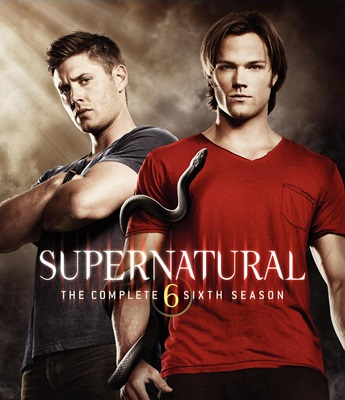
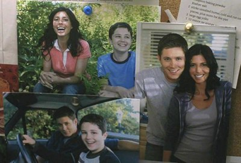
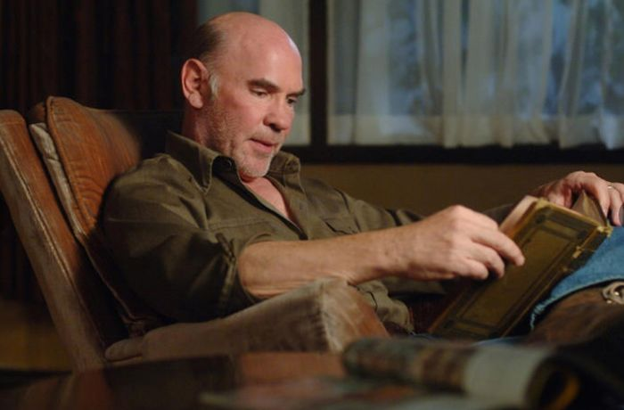
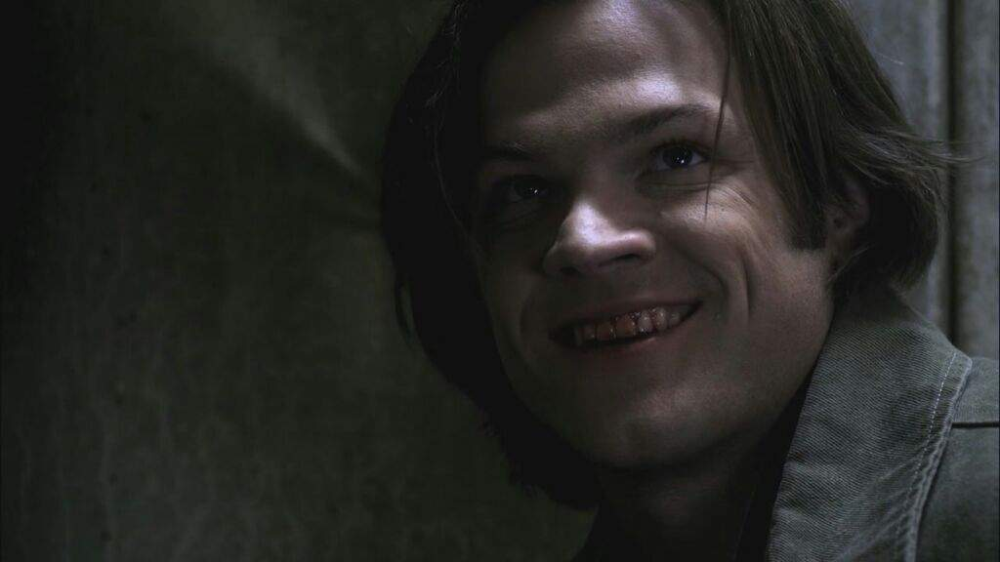
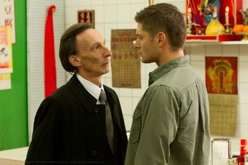
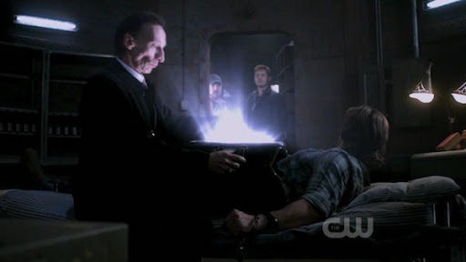
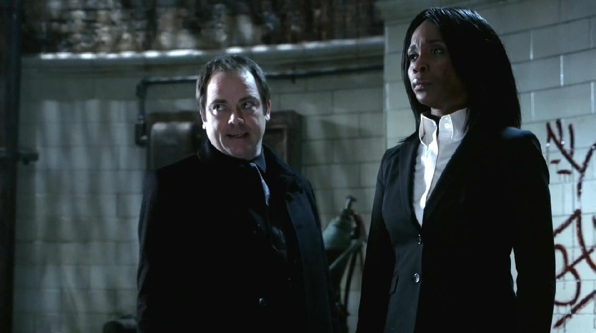

Temporada 6

A sexta temporada começa um ano após os acontecimentos finais da quinta temporada com Dean Winchester vivendo uma vida feliz com Lisa e Ben Braeden . Sam retorna ao mundo dos vivos e a formar equipe com Dean, que deixa sua vida nova para trás. Sam tem vindo a trabalhar com Samuel Campbell, a fim de caçar e capturar vivos monstros Alfas (primeiro do conjunto de genes).


Castiel é pouco útil porque a guerra civil no Céu toma seu tempo. É descoberto que Samuel está seguindo as ordens de Crowley em troca do retorno de sua filha. Crowley quer usar os Alfas para localizar o Purgatório , em que há um conjunto vasto de almas que poderiam ser usados para a alimentação. Crowley trouxe de volta Sam sem sua alma, e Dean implora a ajuda do Cavaleiro da Morte, a fim de recuperá-la. A morte coloca um muro na mente de Sam para que ele não se lembre do inferno.


O velho Sam retorna sem nenhuma lembrança do ano passado. Acontece que Castiel fez um acordo com Crowley para cada um deles receber metade das almas do Purgatório. Dean não gosta da idéia e tenta parar o duo. Para parar os irmãos Winchester e Bobby Singer, Castiel derruba a barreira mental de Sam. Castiel trai Crowley, Crowley torna-se aliado de Rafael e executa o ritual de abrir as portas do Purgatório. Ele falha porque eles tinham sangue falso e Castiel aparece cheio de poder de ter feito o ritual certo. Ele destrói Raphael e deixa Crowley escapar. Quando o Winchesters tentam falar com Castiel, ele revela que ele não é mais um anjo, ele se tornou o novo Deus.

